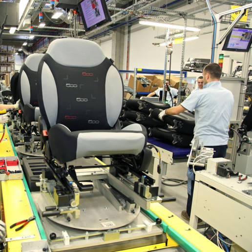

Моє перебування в Європі
Завод
Lear Tychy Structures
Lear Tychy Structures — завод, що належить підрозділу Car Seats Division. В результаті таких
операцій, як зварювання, згинання, зварювання, фарбування і складання, створюються конструкції
автомобільних сидінь.
Lear Corporation – лідер у виробництві
сидінь для автомобільної промисловості.Lear Corporation Poland є найбільшим працедавцем серед
представників даної галузі в країні, об'єднує близько 10 000 співробітників на 6 виробничих
підприємствах і 2 центрах розробки.
